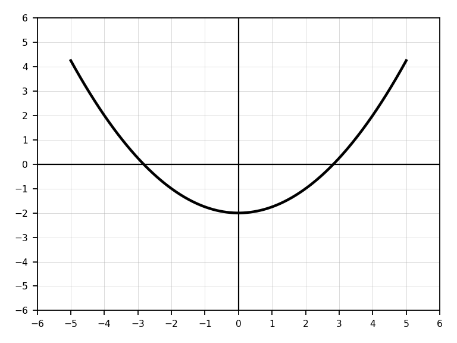
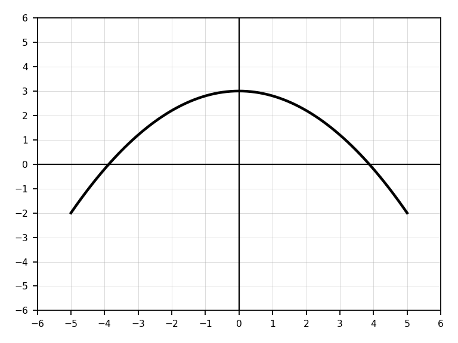
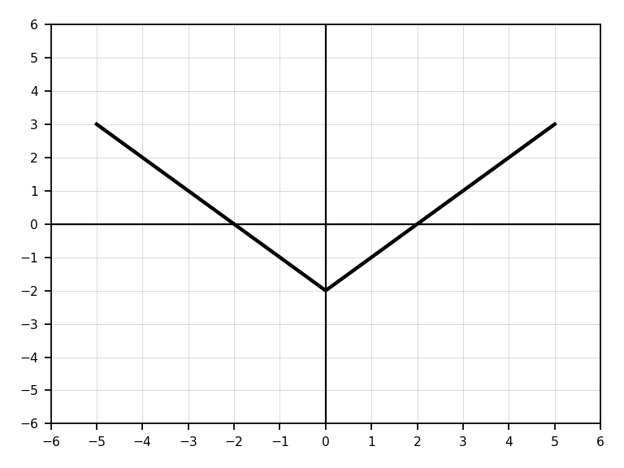
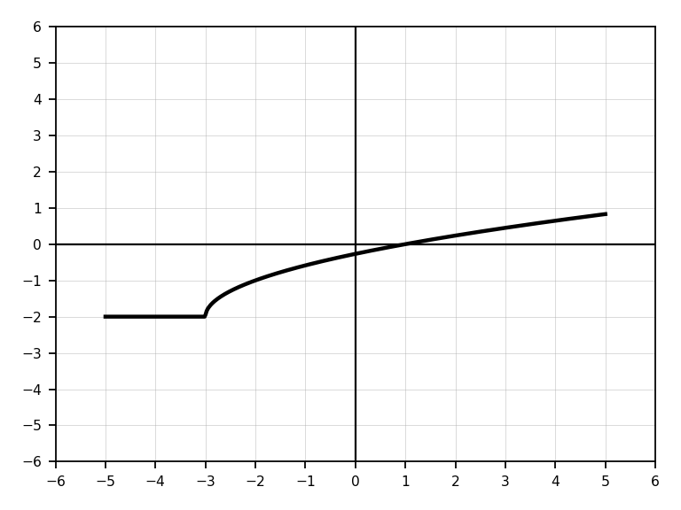
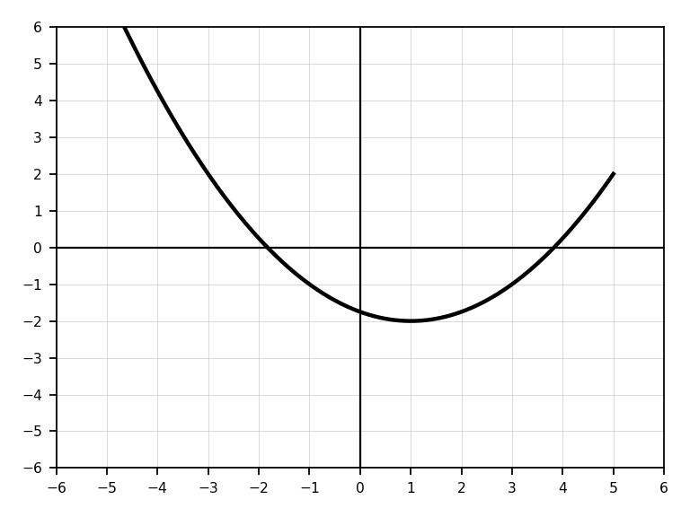
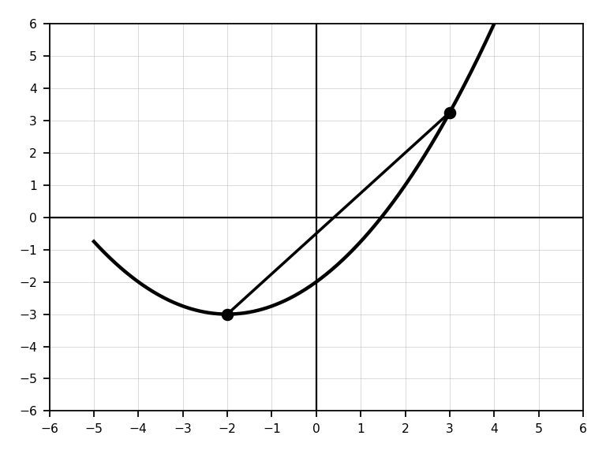
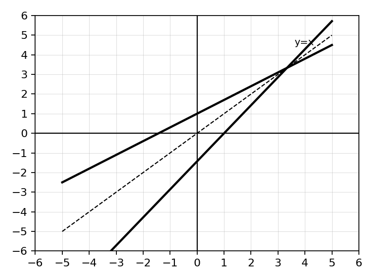
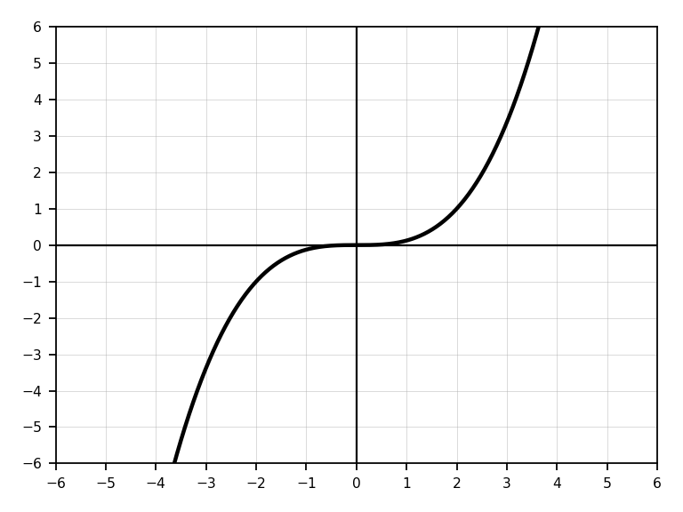
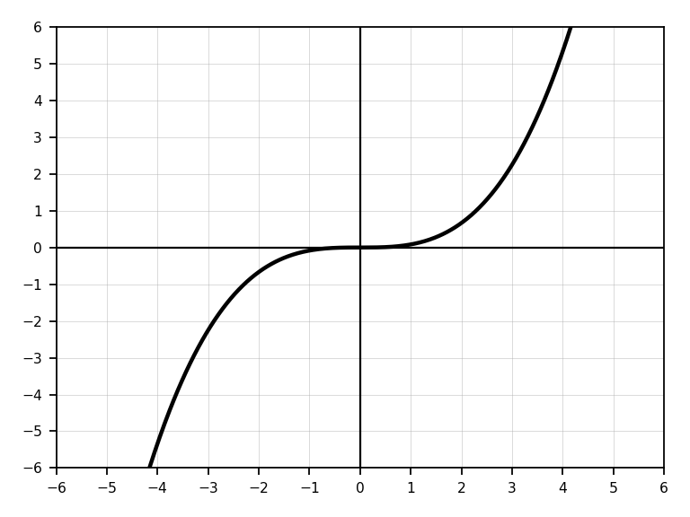
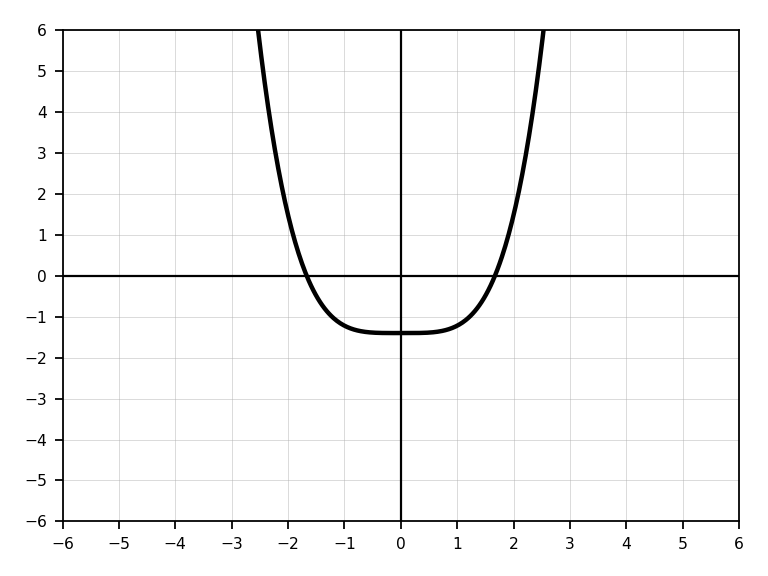

Precalculus – Unit 02: More Functions
Essential Standard
Learning Target: Students will determine whether functions are odd, even, or neither using algebraic and graphical reasoning.
- I can identify symmetry in graphs of functions.
- I can determine whether a function is even, odd, or neither using f(-x).
- I can connect even functions to y-axis symmetry and odd functions to origin symmetry.
- I can justify whether a function is odd, even, or neither using algebraic or graphical evidence.
Learning Target: Students will combine functions using arithmetic operations and interpret the resulting functions.
- I can add, subtract, multiply, and divide functions using function notation.
- I can evaluate function arithmetic expressions for numerical inputs.
- I can determine domain restrictions when functions are combined.
- I can interpret function arithmetic using equations, tables, graphs, or contexts.
Learning Target: Students will compose functions and interpret composition as one function being used as the input of another.
- I can evaluate composite functions such as f(g(x)) and g(f(x)).
- I can write formulas for composite functions.
- I can determine domain restrictions of composite functions.
- I can interpret the meaning of composition in mathematical or real-world situations.
Learning Target: Students will calculate and interpret the difference quotient as an average rate of change.
- I can calculate the difference quotient (f(x+h)-f(x))/h.
- I can simplify difference quotients for linear, quadratic, radical, or rational functions when appropriate.
- I can interpret the difference quotient as an average rate of change.
- I can connect the difference quotient to tables, graphs, and slope between two points.
Learning Target: Students will determine, write, and verify inverse functions using algebraic and graphical reasoning.
- I can determine whether a function has an inverse function.
- I can find an inverse function algebraically by switching x and y and solving.
- I can verify inverse functions using composition.
- I can interpret inverse relationships using equations, graphs, tables, or contexts.
Learning Ladder
| Rung | I Can Statement | Math Practice | DOK | Level |
|---|---|---|---|---|
| 8 | I can model and analyze a situation involving function operations, composition, rates of change, symmetry, or inverses, justify my representation, and evaluate whether my conclusions are reasonable in context. | 4. Model with Math / 3. Construct Arguments | DOK 4 | Above |
| 7 | I can compare and defend multiple strategies for analyzing combined, composed, symmetric, rate-of-change, or inverse functions using algebraic, graphical, tabular, and verbal representations. | 1. Make Sense & Persevere / 3. Construct Arguments | DOK 4 | Above |
| 6 | I can analyze how function structure changes under arithmetic operations, composition, inverses, or the difference quotient, and explain how those changes appear across representations. | 7. Look for Structure / 8. Look for Regularity | DOK 3 | Essential |
| 5 | I can justify conclusions about odd/even symmetry, domain restrictions, composition, average rate of change, and inverse relationships using precise algebraic and graphical reasoning. | 2. Reason Abstractly & Quantitatively / 6. Attend to Precision | DOK 3 | Essential |
| 4 | I can calculate and simplify function arithmetic, composite functions, difference quotients, and inverse functions while identifying restrictions when needed. | 6. Attend to Precision | DOK 2 | Essential |
| 3 | I can evaluate function operations, compositions, inverse expressions, and average rates of change from equations, tables, graphs, and descriptions. | 5. Use Tools Strategically / 7. Look for Structure | DOK 2 | Essential |
| 2 | I can identify basic function features and vocabulary, including odd, even, neither, function operation, composition, average rate of change, and inverse. | 2. Reason Abstractly | DOK 1 | Essential |
| 1 | I can recognize functions from equations, graphs, tables, and descriptions and evaluate simple function notation accurately. | 1. Make Sense of Problems | DOK 1 | Essential |
Progress Tracking
Assessment Methods by DOK Level
Format: 3–5 minute warm-up, quick check, or exit ticket
Purpose: Check whether students can recognize vocabulary, evaluate simple function notation, identify symmetry, and read basic features from equations, tables, or graphs.
Assessment Ideas
- Odd, Even, or Neither Recognition Check Can Be Assessed After Unit 4, Section 1 – Students classify simple graphs or equations as odd, even, or neither and identify the type of symmetry shown.
- Function Operation Vocabulary Check Can Be Assessed After Unit 4, Section 2 – Students identify whether a notation such as (f+g)(x), (fg)(x), (f/g)(x), or f(g(x)) represents arithmetic or composition.
- Basic Composition Evaluation Check Can Be Assessed After Unit 4, Section 3 – Students evaluate simple composite expressions such as f(g(2)) using a table, graph, or equation.
- Inverse Relationship Recognition Check Can Be Assessed After Unit 4, Section 5 – Students match a function to its inverse using a table, graph, or simple equation.
Students who struggle here need more direct practice with function notation, symmetry language, composition notation, and inverse vocabulary before moving into multi-step algebraic work.
Format: Exit ticket, partner check, whiteboard response, or short written explanation
Purpose: Check whether students can apply procedures accurately, combine functions, compose functions, calculate average rate of change, and find inverses.
Assessment Ideas
- Function Arithmetic Task Can Be Assessed After Unit 4, Section 2 – Students calculate (f+g)(x), (f-g)(x), (fg)(x), and (f/g)(x), then state any restrictions.
- Composite Function Task Can Be Assessed After Unit 4, Section 3 – Students evaluate and simplify f(g(x)) and g(f(x)), then compare the results.
- Difference Quotient Task Can Be Assessed After Unit 4, Section 4 – Students calculate and simplify (f(x+h)-f(x))/h for a linear or quadratic function and interpret it as an average rate of change.
- Inverse Function Task Can Be Assessed After Unit 4, Section 5 – Students find the inverse of a linear, quadratic-with-restricted-domain, radical, or rational function and verify using substitution or composition.
Students at this level can usually perform the skill, but the assessment reveals whether they maintain notation, track restrictions, distinguish arithmetic from composition, and connect procedures to meaning.
Format: Constructed response, error analysis, gallery walk, or group explanation
Purpose: Check whether students can justify reasoning, compare representations, identify restrictions, and explain function structure.
Assessment Ideas
- Symmetry Justification Task Can Be Assessed After Unit 4, Section 1 – Students determine whether a function is odd, even, or neither using both algebraic evidence and graph symmetry.
- Composition and Domain Analysis Can Be Assessed After Unit 4, Section 3 – Students analyze a composite function, determine its domain, and explain how the inside function affects the allowable inputs.
- Difference Quotient Interpretation Can Be Assessed After Unit 4, Section 4 – Students compare average rates of change from a table, graph, and difference quotient expression and explain how they represent the same idea.
- Inverse Verification and Error Analysis Can Be Assessed After Unit 4, Section 5 – Students critique an incorrect inverse, identify the algebraic or domain error, and verify the corrected inverse using composition.
This level shows whether students understand the structure behind function operations rather than only following procedures. These tasks reveal whether students can reason about notation, restrictions, symmetry, rates of change, and inverse relationships.
Format: Performance task, extended response, modeling task, or strategy defense
Purpose: Check whether students can synthesize function structure, operations, composition, rates of change, and inverses in unfamiliar situations.
Assessment Ideas
- Function Model Combination Task Can Be Assessed After Unit 4, Section 1 – Students model a situation using two functions, combine or compose them, interpret the new function, and justify domain restrictions.
- Design-a-Function Task Can Be Assessed After Unit 4, Section 3 – Students create a function that satisfies conditions involving symmetry, inverse behavior, composition, and rate of change, then justify why it works.
- Representation Transfer Task Can Be Assessed After Unit 4, Section 4 – Students move between a graph, table, equation, and verbal description involving function composition or inverses and explain how each representation shows the same relationship.
- Strategy Defense Task Can Be Assessed After Unit 4, Section 5 – Students solve a multi-step function problem using more than one method and defend which method is more efficient, precise, or meaningful.
DOK 4 tasks show whether students can transfer function understanding to unfamiliar situations and justify decisions involving structure, restrictions, symmetry, composition, rates of change, and inverses.
Summative Assessment Plan
Unit 2 Summative Assessment Unit 2 Assessed During Unit 4
Assessment is designed for a 45-minute paper-only time limit and is built around balanced evidence rather than a fixed question-count breakdown. Each version includes a mix of procedural fluency, graphing/application tasks, and short reasoning or critique prompts aligned to the unit learning targets and Depth of Knowledge expectations.
Assessments emphasize algebraic accuracy, interpretation of mathematical structure, graphing and representation skills, explanation of reasoning, and application of concepts in both familiar and unfamiliar situations.
Summative assessments are intentionally focused on DoK 1–3 evidence within a paper-only environment. Extended DoK 4 modeling, investigation, performance, or technology-based tasks are assessed separately through activities, investigations, discourse tasks, or formative performance assessments rather than embedded directly into the summative exam.
Holistic Rubric
The student demonstrates a strong and flexible understanding of Unit 2 concepts. Work is accurate, well-organized, and supported by clear reasoning. The student can analyze odd/even symmetry, combine functions, compose functions, calculate and interpret difference quotients, find and verify inverses, and connect equations, graphs, tables, and contexts. The student consistently identifies restrictions and justifies conclusions using precise mathematical language.
The student demonstrates solid understanding of the essential Unit 2 concepts. Most work is accurate, and the student can complete standard and moderately complex tasks independently. The student can classify functions as odd, even, or neither; perform function arithmetic; evaluate and simplify compositions; calculate difference quotients; and find inverses. Explanations are generally clear, though they may lack some precision or depth. Errors are minor or isolated and do not show major misconceptions.
The student demonstrates partial but passable understanding of Unit 2 concepts. The student can complete many routine tasks but may need support with notation, domain restrictions, composition order, simplifying difference quotients, verifying inverses, or explaining symmetry. Work may contain errors, incomplete explanations, or inconsistent notation, but there is enough evidence that the student understands the main ideas.
The student does not yet demonstrate sufficient understanding of the essential Unit 2 concepts. Work shows major errors, missing reasoning, incorrect notation, confusion between function arithmetic and composition, weak understanding of inverse relationships, difficulty simplifying expressions, or inability to justify symmetry or restrictions. The student may need reteaching, additional practice, or reassessment to demonstrate proficiency.
Strictly Assessment Bank
Unit 2 Assessment Bank: Problems are organized by Depth of Knowledge and pulled from the uploaded teacher banks. These are intended as source items for formative assessments, reassessments, and summative assessment versions.
Rolling timing: Unit 2 is assessed during Unit 4.
Determine whether each function is even, odd, or neither.
- \(f(x)=x^2\)
- \(g(x)=x^3\)
- \(h(x)=x^2+x\)
Evaluate \(f(-x)\) and compare it to \(f(x)\).
\(f(x)=x^2+4x\)
Classify the function as even, odd, or neither.
A graph is shown. Use symmetry to classify the function as even, odd, or neither.
- What type of symmetry do you see?
- What should be true about \(f(-x)\)?

A graph is shown. Use symmetry to classify the function as even, odd, or neither.
- What type of symmetry do you see?
- What should be true about \(f(-x)\)?

Use the table to determine whether the function appears even, odd, or neither.
| \(x\) | \(-2\) | \(-1\) | \(1\) | \(2\) |
|---|---|---|---|---|
| \(f(x)\) | \(4\) | \(1\) | \(1\) | \(4\) |
Justify using the table.
Use the table to determine whether the function appears even, odd, or neither.
| \(x\) | \(-2\) | \(-1\) | \(1\) | \(2\) |
|---|---|---|---|---|
| \(f(x)\) | \(-4\) | \(-1\) | \(1\) | \(4\) |
Justify using the table.
Match each description to even, odd, or neither.
- A graph symmetric about the \(y\)-axis.
- A graph symmetric about the origin.
- A graph with no symmetry about the \(y\)-axis or origin.

Fill in each blank.
- If \(f(-x)=f(x)\), the function is ____________________.
- If \(f(-x)=-f(x)\), the function is ____________________.
- If neither relationship is true, the function is ____________________.
Let \(f(x)=2x+3\) and \(g(x)=x^2-4\).
- Find \((f+g)(x)\).
- Find \((f-g)(x)\).
- Find \((fg)(x)\).
Let \(f(x)=x+5\) and \(g(x)=x-2\).
- Find \(\left(\frac{f}{g}\right)(x)\).
- State the value of \(x\) that must be excluded from the domain.
The graphs of \(f\) and \(g\) are shown.
- Estimate \(f(2)\) and \(g(2)\).
- Estimate \((f+g)(2)\).
- Estimate \((f-g)(2)\).

Use the table to evaluate each expression.
| \(x\) | \(-2\) | \(0\) | \(3\) |
|---|---|---|---|
| \(f(x)\) | \(5\) | \(1\) | \(-4\) |
| \(g(x)\) | \(-2\) | \(6\) | \(3\) |
- \((f+g)(0)\)
- \((fg)(-2)\)
- \(\left(\frac{f}{g}\right)(3)\)
Let \(p(x)=x^2\) and \(q(x)=3x\).
- Find \((p+q)(4)\).
- Find \((p-q)(-2)\).
- Find \((pq)(1)\).
Fill in the blanks.
- \((f+g)(x)=\) ____________________
- \((f-g)(x)=\) ____________________
- \((fg)(x)=\) ____________________
- \(\left(\frac{f}{g}\right)(x)=\) ____________________, where \(g(x)\neq\) ________.
Let \(f(x)=\sqrt{x}\) and \(g(x)=x+1\).
- Find \((f+g)(9)\).
- Find \((fg)(4)\).
- Explain why \(x=-1\) is not useful for evaluating \(f(x)\).
Let \(f(x)=x^2-9\) and \(g(x)=x-3\).
- Find \(\left(\frac{f}{g}\right)(x)\).
- Simplify the expression.
- State the excluded value before simplification.
Let \( f(x)=3x-2 \) and \( g(x)=x+5 \).
- Find \((f+g)(x)\).
- Find \((f-g)(x)\).
Let \( f(x)=x^2 \) and \( g(x)=2x \).
- Evaluate \((fg)(3)\).
- Evaluate \(\left(\frac{f}{g}\right)(4)\).
Use the table.
| \(x\) | \(-1\) | \(0\) | \(2\) |
|---|---|---|---|
| \(f(x)\) | \(3\) | \(1\) | \(5\) |
| \(g(x)\) | \(2\) | \(-4\) | \(1\) |
- Find \((f+g)(0)\).
- Find \((fg)(2)\).
State the domain restriction for:
\(\frac{x+1}{x-7}\)
True or False:
If \(g(x)=0\), then \(\frac{f(x)}{g(x)}\) is undefined.
Explain briefly.
Match each operation to its description:
- sum
- difference
- product
- quotient
Descriptions involve combined totals, comparisons, scaling, and remaining amounts.
Let \(f(x)=2x+3\) and \(g(x)=x^2-1\). Evaluate:
- \(f(g(2))\)
- \(g(f(2))\)
- Are the answers the same?
Let \(f(x)=x+5\) and \(g(x)=3x\). Find:
- \((f\circ g)(x)\)
- \((g\circ f)(x)\)
Let \(f(x)=x^2\) and \(g(x)=x-4\). Evaluate:
- \(f(g(3))\)
- \(g(f(3))\)
Use the table.
| \(x\) | \(-2\) | \(-1\) | \(0\) | \(1\) | \(2\) |
|---|---|---|---|---|---|
| \(f(x)\) | \(1\) | \(3\) | \(2\) | \(-1\) | \(0\) |
| \(g(x)\) | \(2\) | \(0\) | \(-1\) | \(3\) | \(1\) |
- \(f(g(0))\)
- \(g(f(2))\)
- \(f(f(1))\)
Fill in the blanks.
- \((f\circ g)(x)=\) ____________________
- \(f(g(x))\) means first use ____________________, then use ____________________.
- \(g(f(x))\) means first use ____________________, then use ____________________.
Let \(f(x)=4x-1\). Evaluate:
- \(f(3)\)
- \(f(f(3))\)
- \(f(f(x))\)
Let \(f(x)=\sqrt{x}\) and \(g(x)=x+9\). Evaluate:
- \(f(g(7))\)
- \(g(f(16))\)
Decide whether each expression represents function composition or function arithmetic.
- \(f(g(x))\)
- \(f(x)+g(x)\)
- \((f\circ g)(x)\)
- \(f(x)g(x)\)
Let \(f(x)=x-2\) and \(g(x)=5x\). Find:
- \((f\circ g)(4)\)
- \((g\circ f)(4)\)
- Explain why order matters.
Let \(f(x)=x^2+1\) and \(g(x)=x-3\). Find:
- \(f(g(x))\)
- \(g(f(x))\)
Use the table.
| \(x\) | \(-1\) | \(0\) | \(1\) | \(2\) | \(3\) |
|---|---|---|---|---|---|
| \(f(x)\) | \(0\) | \(2\) | \(3\) | \(1\) | \(-1\) |
| \(g(x)\) | \(3\) | \(1\) | \(0\) | \(-1\) | \(2\) |
- \(f(g(1))\)
- \(g(f(0))\)
- \(g(g(2))\)
Let \(h(x)=3x+2\). Find and simplify:
- \(h(x+1)\)
- \(h(2x)\)
- \(h(h(x))\)
Let \(f(x)=x^2\). Find and simplify:
\(\frac{f(x+h)-f(x)}{h}\)
Let \(f(x)=3x+5\). Find and simplify:
\(\frac{f(x+h)-f(x)}{h}\)
Let \(f(x)=x^2+4x\). Find \(f(x+h)\).
Let \(f(x)=2x^2-1\). Find \(f(x+h)-f(x)\).
Let \(f(x)=x^2-3x+2\). Find and simplify the difference quotient.
Let \(f(x)=5-x\). Find and simplify the difference quotient.
Let \(f(x)=4\). Find and simplify the difference quotient.
Fill in the blanks.
- \(\frac{f(x+h)-f(x)}{h}\) represents the slope of a ____________________ line.
- The two \(x\)-values being compared are ____________________ and ____________________.
- \(h\) represents the change in ____________________.
Let \(f(x)=x^2\). Evaluate the difference quotient at \(x=2\) and \(h=3\).
Let \(f(x)=2x+1\). Evaluate the difference quotient at \(x=-1\) and \(h=4\).
Use \(\frac{f(b)-f(a)}{b-a}\) to find the average rate of change of \(f(x)=x^2\) from \(x=1\) to \(x=4\).
Use the table to find the average rate of change from \(x=0\) to \(x=3\).
| \(x\) | \(0\) | \(1\) | \(2\) | \(3\) |
|---|---|---|---|---|
| \(f(x)\) | \(2\) | \(5\) | \(10\) | \(17\) |
For \(\frac{f(7)-f(2)}{7-2}\), identify the first input, second input, and change in input.
True or False: The difference quotient is another way to write average rate of change. Explain briefly.
Determine whether each pair of points would switch correctly under an inverse.
- \((2,7)\) and \((7,2)\)
- \((-3,5)\) and \((5,-3)\)
- \((4,1)\) and \((-4,1)\)
If \(f(3)=8\), what point must be on \(f^{-1}\)?
Find the inverse of \(f(x)=x+6\).
Find the inverse of \(f(x)=2x-5\).
Find the inverse of \(f(x)=\frac{x+4}{3}\).
Find the inverse of \(f(x)=5-2x\).
Use the table.
| \(x\) | \(-2\) | \(-1\) | \(0\) | \(1\) | \(2\) |
|---|---|---|---|---|---|
| \(f(x)\) | \(5\) | \(3\) | \(1\) | \(-1\) | \(-3\) |
- Find \(f^{-1}(1)\).
- Find \(f^{-1}(-3)\).
- Write two ordered pairs on \(f^{-1}\).
Fill in the blanks.
- To find an inverse algebraically, switch ____________________ and ____________________.
- The graph of an inverse reflects across the line ____________________.
- If \(f(a)=b\), then \(f^{-1}(b)=\) ____________________.
Find the inverse relation of the set:
\(\{(1,4),(2,7),(3,10),(4,13)\}\)
Does the inverse relation of \(\{(1,2),(2,4),(3,4),(4,7)\}\) represent a function? Explain.
Graph the line \(y=x\). Then plot the points \((1,4)\), \((2,5)\), and their inverse points.

Given \(f(x)=x^2\), find:
- \(f(3)\)
- \(f(-3)\)
- Explain why this creates a problem for the inverse.
State whether each function is one-to-one.
- \(f(x)=3x-1\)
- \(g(x)=x^2\)
- \(h(x)=x^3\)
Use the horizontal line test to decide whether each graph has an inverse that is a function.

Determine whether the function is even, odd, or neither. Show algebraic work.
\(f(x)=3x^4-2x^2\)
Determine whether the function is even, odd, or neither. Show algebraic work and explain your conclusion.
\(f(x)=x^3+x\)
Determine whether the function is even, odd, or neither. Justify your answer.
\(f(x)=x^2+x^3\)
A graph is shown.
- Classify the function as even, odd, or neither.
- Describe how the symmetry appears in the graph.
- Write a possible equation for a function with this symmetry.

Explain how you can test whether a function is even, odd, or neither without graphing it.
Your explanation should include the role of \(f(-x)\).
Compare the functions \(f(x)=x^2\) and \(g(x)=x^2+3\).
- Which function is even?
- Does adding a constant change whether the function is even?
- Explain using algebra or graph structure.
A table of values shows that \(f(-x)=-f(x)\) for matching positive and negative inputs.
- What type of function does the table suggest?
- Give a possible equation for the function.
- Explain what the graph should look like.
Sketch one even function and one odd function.
Label each graph and explain how the symmetry confirms your classification.

Let \(f(x)=x^2-1\) and \(g(x)=2x+5\).
- Find \((f+g)(x)\).
- Find \((f-g)(x)\).
- Find \((fg)(x)\).
- Find \(\left(\frac{f}{g}\right)(x)\) and state its domain restriction.
Let \(f(x)=\sqrt{x+2}\) and \(g(x)=x-1\).
- Find \((f+g)(x)\).
- Find \((fg)(x)\).
- State the domain of each combined function.
Let \(f(x)=\frac{1}{x-4}\) and \(g(x)=x^2\).
- Find \((f+g)(x)\).
- Find \((fg)(x)\).
- State the domain restrictions.
The graph shown represents \(f(x)+g(x)\).
- Estimate \((f+g)(-2)\), \((f+g)(0)\), and \((f+g)(4)\).
- Explain how the sum graph relates to the values of \(f\) and \(g\).

The graph shown represents a product \(f(x)g(x)\).
- Identify the \(x\)-intercepts of the product graph.
- Explain why zeros of either factor become zeros of the product.

The graph shown represents a quotient \(\frac{f(x)}{g(x)}\).
- What value of \(x\) appears to be excluded?
- Explain why a zero of the denominator creates a domain restriction.

Use the table to compare function operations.
| \(x\) | \(-1\) | \(0\) | \(1\) | \(2\) |
|---|---|---|---|---|
| \(f(x)\) | \(4\) | \(3\) | \(0\) | \(-2\) |
| \(g(x)\) | \(2\) | \(-1\) | \(5\) | \(0\) |
- Find \((f+g)(1)\).
- Find \((fg)(0)\).
- Find \(\left(\frac{f}{g}\right)(-1)\).
- Explain why \(\left(\frac{f}{g}\right)(2)\) is undefined.
A student simplified \(\frac{x^2-9}{x-3}\) to \(x+3\) and said the domain is all real numbers.
- What did the student do correctly?
- What domain detail did the student miss?
- Write the correct simplified expression and domain restriction.
The graphs of \(f\) and \(g\) are shown.
- Estimate \((f+g)(1)\).
- Estimate \((f-g)(-2)\).
- Estimate \((fg)(0)\).
- Explain how you used the graphs.

Given:
\(f(x)=\sqrt{x+4}\qquad g(x)=\frac{1}{x-2}\)
Determine the domain of:
- \(f+g\)
- \(fg\)
Explain your reasoning.
A company tracks daily expenses \(E(x)\) and daily revenue \(R(x)\).
Explain what:
- \(R(x)-E(x)\)
- \(\frac{R(x)}{E(x)}\)
would represent in context.
Compare:
\((f+g)(x)\qquad \text{and}\qquad f(x)+g(x)\)
Are these equivalent notations? Explain.
Given:
\(f(x)=x^2-9\qquad g(x)=x-3\)
- Simplify \(\frac{f(x)}{g(x)}\).
- Explain why the domain restriction still exists after simplification.
Use a graph to estimate where:
\((f+g)(x)=0\)
Explain how the graphs help you determine the estimate.

Let \(f(x)=x^2-4\) and \(g(x)=x+1\).
- Find \(f(g(x))\).
- Find \(g(f(x))\).
- Compare the two results.
Let \(f(x)=\sqrt{x}\) and \(g(x)=x-5\).
- Find \(f(g(x))\).
- State the domain of \(f(g(x))\).
- Explain why the domain is restricted.
Let \(f(x)=\frac{1}{x}\) and \(g(x)=x-2\).
- Find \(f(g(x))\).
- State the domain restriction.
- Explain what input causes the problem.
Let \(f(x)=2x+7\) and \(g(x)=\frac{x-7}{2}\).
- Find \(f(g(x))\).
- Find \(g(f(x))\).
- What do you notice?
A machine doubles an input and then adds 5.
- Write a function \(f(x)\) for this machine.
- A second machine squares its input. Write \(g(x)\).
- Write \(g(f(x))\).
- Explain what \(g(f(x))\) means in context.
A student says:
\((f\circ g)(x)=f(x)\circ g(x)\)
Explain why this notation is incorrect.
Use the table.
| \(x\) | \(-2\) | \(-1\) | \(0\) | \(1\) | \(2\) |
|---|---|---|---|---|---|
| \(f(x)\) | \(0\) | \(1\) | \(2\) | \(3\) | \(4\) |
| \(g(x)\) | \(2\) | \(-2\) | \(1\) | \(0\) | \(-1\) |
- Find \(f(g(-2))\).
- Find \(g(f(-2))\).
- Explain why one composition may be undefined if the output is not in the table.
Let \(f(x)=x^2\), \(g(x)=x+4\), and \(h(x)=\sqrt{x}\). Evaluate:
- \(f(g(h(9)))\)
- \(h(f(g(-1)))\)
Let \(f(x)=3x-1\) and \(g(x)=x^2+2\).
- Find \(f(g(x))\).
- Find \(g(f(x))\).
- Which composition produces a quadratic? Explain.
Given \(f(x)=\sqrt{x+3}\) and \(g(x)=x^2-4\):
- Find \(f(g(x))\).
- Find \(g(f(x))\).
- Compare the domain restrictions.
A temperature in Celsius is converted to Fahrenheit using \(F(C)=\frac{9}{5}C+32\). A lab sensor reports temperature as \(C(t)=2t+10\).
- Write \(F(C(t))\).
- Interpret what the composition means.
Let \(f(x)=x^2+1\) and \(g(x)=\sqrt{x-1}\).
- Find \(f(g(x))\).
- Find \(g(f(x))\).
- Which composition has the more restricted domain? Explain.
A student computes \(f(g(2))\) by finding \(f(2)\) first.
- Explain the error.
- Write the correct order of evaluation.
- Create a simple example showing why order matters.
Use the graph of \(f\) and the graph of \(g\).
- Estimate \(g(1)\).
- Use that result to estimate \(f(g(1))\).
- Estimate \(f(1)\).
- Use that result to estimate \(g(f(1))\).
- Compare the results.

Use the graph of \(f\) and the table for \(g\).
| \(x\) | \(-2\) | \(-1\) | \(0\) | \(1\) | \(2\) |
|---|---|---|---|---|---|
| \(g(x)\) | \(1\) | \(3\) | \(-1\) | \(2\) | \(0\) |
- Find \(g(0)\).
- Use the graph of \(f\) to find \(f(g(0))\).
- Find \(g(2)\).
- Use the graph of \(f\) to find \(f(g(2))\).
- Explain how the table output becomes the graph input.

Use the equation for \(f\) and the graph of \(g\).
\(f(x)=2x-1\)
- Estimate \(g(3)\) from the graph.
- Find \(f(g(3))\).
- Estimate \(g(-1)\) from the graph.
- Find \(f(g(-1))\).
- Explain why the graph value must be found before using the equation.

Use the table for \(f\) and the equation for \(g\).
\(g(x)=x^2-1\)
| \(x\) | \(-3\) | \(-2\) | \(-1\) | \(0\) | \(1\) | \(2\) | \(3\) |
|---|---|---|---|---|---|---|---|
| \(f(x)\) | \(2\) | \(-1\) | \(0\) | \(3\) | \(1\) | \(4\) | \(-2\) |
- Find \(f(2)\).
- Find \(g(f(2))\).
- Find \(g(-1)\).
- Find \(f(g(-1))\), if possible.
- Explain when a table-based composition can become undefined.
Let \(f(x)=x^2+2x\).
- Find \(f(x+h)\).
- Find \(f(x+h)-f(x)\).
- Simplify \(\frac{f(x+h)-f(x)}{h}\).
Let \(f(x)=2x^2-5x+1\). Find and simplify the difference quotient.
Let \(f(x)=-x^2+6x\). Find and simplify the difference quotient.
Let \(f(x)=x^3\).
- Find \(f(x+h)\).
- Find and simplify the difference quotient.
Let \(f(x)=\frac{1}{x}\).
- Find \(f(x+h)\).
- Set up the difference quotient.
- Simplify.
Let \(f(x)=\sqrt{x}\). Set up the difference quotient and rationalize the numerator.
Let \(f(x)=x^2\). Find the average rate of change from \(x=a\) to \(x=a+h\). Compare it to the difference quotient.
Use a graph of \(f(x)=x^2-2\) to estimate the average rate of change from \(x=1\) to \(x=3\). Explain how this matches the idea of the difference quotient.

Use a graph of \(f(x)=x^3-3x\) to estimate the average rate of change from \(x=-2\) to \(x=1\). Explain what the secant line represents.

A ball’s height is modeled by \(h(t)=-16t^2+64t+5\).
- Find the average velocity from \(t=1\) to \(t=3\).
- Explain what your answer means in context.
The position of a runner is \(s(t)=3t^2+2t\).
- Find \(\frac{s(t+h)-s(t)}{h}\).
- What does this expression represent?
Use the table to estimate the average rate of change on each interval.
| \(x\) | \(1\) | \(2\) | \(4\) | \(7\) |
|---|---|---|---|---|
| \(f(x)\) | \(3\) | \(8\) | \(20\) | \(41\) |
- \(x=1\) to \(x=2\)
- \(x=2\) to \(x=4\)
- \(x=4\) to \(x=7\)
Let \(f(x)=x^2-4x+1\). Find the difference quotient and evaluate your simplified result at \(x=3\), \(h=0.5\).
A student writes \(f(x+h)=f(x)+f(h)\). Use \(f(x)=x^2\) to show why this is not generally true.
For \(f(x)=\sqrt{x}\), use a graph to estimate the average rate of change from \(x=1\) to \(x=4\). Then verify using exact function values.

Find the inverse of \(f(x)=4x-9\). Then verify by composition.
Find the inverse of \(f(x)=\frac{2}{3}x+5\). Then check one point on \(f\) and its corresponding point on \(f^{-1}\).
Find the inverse of \(f(x)=\frac{x-7}{2}\).
Find the inverse of \(f(x)=\frac{5x+1}{3}\).
Find the inverse of \(f(x)=\frac{x+2}{x-3}\). State any restrictions.
Find the inverse of \(f(x)=\frac{3x-4}{x+2}\). State any restrictions.
Let \(f(x)=x^2+4\) with domain \(x\ge0\).
- Find \(f^{-1}(x)\).
- State the domain and range of \(f^{-1}\).
- Explain why the domain restriction matters.
Let \(f(x)=(x-3)^2\) with domain \(x\ge3\).
- Find \(f^{-1}(x)\).
- State the domain of \(f^{-1}\).
- State the range of \(f^{-1}\).
Let \(f(x)=\sqrt{x-5}\).
- Find \(f^{-1}(x)\).
- State the domain and range of both \(f\) and \(f^{-1}\).
Let \(f(x)=\sqrt[3]{x+2}\).
- Find \(f^{-1}(x)\).
- Explain why this inverse is a function without restricting the domain.
Verify that \(f(x)=2x-1\) and \(g(x)=\frac{x+1}{2}\) are inverses using composition.
A student found the inverse of \(f(x)=3x-12\) as \(f^{-1}(x)=3x+12\).
- Identify the error.
- Find the correct inverse.
- Verify.
Use the graph of \(f\).
- Sketch \(f^{-1}\).
- Identify two reflected point pairs.
- State whether \(f^{-1}\) is a function.

Use the graph of \(f\).
- Decide whether \(f^{-1}\) is a function.
- Explain using the horizontal line test.
- Describe what happens when reflected across \(y=x\).

A function has domain \([-2,5]\) and range \([1,8]\). What are the domain and range of its inverse?
Consider \(f(x)=x^2+x^3\).
- Classify the function as even, odd, or neither.
- Justify algebraically.
- Describe what the graph should look like.
- Explain why combining even and odd terms affects symmetry.
A student claims, “All polynomial functions are either even or odd.”
- Test the claim with at least two examples.
- Provide a counterexample if possible.
- State whether the claim is true or false.
- Justify your conclusion.
Explain why all odd functions that are defined at \(x=0\) must pass through the origin.
Include both algebraic reasoning and graphical interpretation.
Explain why constant functions are always even.
Use \(f(-x)\) and \(f(x)\) in your explanation.
Consider the piecewise-defined function.
\(f(x)=\begin{cases}x^2 & x\ge 0\\ -x^2 & x<0\end{cases}\)
- Classify the function as even, odd, or neither.
- Justify algebraically.
- Describe its symmetry.

Does shifting a function horizontally preserve even or odd symmetry?
Use the graph and at least one example to support your answer.

Compare the symmetry of \(x^2\), \(x^3\), and \(x^2+x\).
Explain how the structure of each equation connects to its graph.
Choose one function that is even or odd. Show how algebra and graphing confirm the same symmetry result.
Your response should connect \(f(-x)\), symmetry, and the visual structure of the graph.
A fundraiser has revenue \(R(x)=12x+40\) and cost \(C(x)=8x+100\), where \(x\) is the number of items sold.
- Write a function for profit \(P(x)=R(x)-C(x)\).
- Interpret \(P(10)\) in context.
- Explain why subtracting functions makes sense in this situation.

Let \(f(x)=x^2-4\) and \(g(x)=x-2\).
- Find \(\left(\frac{f}{g}\right)(x)\) and simplify.
- Explain why the simplified expression does not have the same domain as \(x+2\).
- Describe what would happen on a graph at the excluded input.
Compare the functions \(f+g\), \(fg\), and \(\frac{f}{g}\). Use \(f(x)=x+1\) and \(g(x)=x-4\).
- Write each combined function.
- Compare their domains.
- Explain why the quotient requires more caution than the sum or product.
A student claims, “If \(f\) and \(g\) are both defined for all real numbers, then \(\frac{f}{g}\) is also defined for all real numbers.”
- Is the claim true?
- Use an example to test the claim.
- Write a complete explanation.
Let \(f(x)=\sqrt{x+1}\) and \(g(x)=6-x\).
- Find the domain of \(f+g\).
- Find the domain of \(fg\).
- Find the domain of \(\frac{f}{g}\).
- Explain why the quotient has one additional restriction.

Explain the difference between simplifying a quotient of functions and changing the function itself.
Use \(\frac{x^2-1}{x-1}\) as your example. Mention excluded values, holes, or domain restrictions.
Use structure to determine whether each statement is always, sometimes, or never true.
- The domain of \(f+g\) is the intersection of the domains of \(f\) and \(g\).
- The domain of \(fg\) is the union of the domains of \(f\) and \(g\).
- The domain of \(\frac{f}{g}\) must exclude inputs where \(g(x)=0\).
Justify each answer.
Two students are comparing \((f+g)(x)\) and \(f(g(x))\).
- Explain why these are different operations.
- Create a pair of functions where \((f+g)(2)\neq f(g(2))\).
- Explain how notation prevents confusion.
A student says:
“If two functions have the same domain, then all operations on them will also have the same domain.”
Is this true? Use examples and explanations to justify your answer.
Compare the domains of:
- \(f+g\)
- \(fg\)
- \(\frac{f}{g}\)
Explain why the quotient operation behaves differently.
Explain why:
\(\frac{x^2-4}{x-2}\)
and
\(x+2\)
have different graphs even though they simplify algebraically.
Create two functions where:
- the sum is defined
- the quotient is not defined for all real numbers
Explain why.
Let \(f(x)=x^2\) and \(g(x)=x+3\).
- Find \(f(g(x))\).
- Find \(g(f(x))\).
- Explain why the two expressions are not equivalent.
- Describe how the graphs of the two compositions would differ.
A student claims, “Function composition is commutative because \(f(g(x))\) and \(g(f(x))\) use the same two functions.”
- Test the claim using an example.
- Decide whether the claim is true.
- Write a complete explanation.
Let \(f(x)=\sqrt{x}\) and \(g(x)=x-6\).
- Find \(f(g(x))\).
- Explain why the domain is not all real numbers.
- Describe how the restriction comes from the inside function.
Let \(f(x)=\frac{1}{x}\) and \(g(x)=x^2-9\).
- Find \(f(g(x))\).
- State all domain restrictions.
- Explain how zeros of the inside function create restrictions in the composition.
A real-world process has two steps:
Step 1: A starting value is increased by 20%.
Step 2: A flat fee of 15 is added.
- Write a function for each step.
- Write a composition for the complete process.
- Reverse the order of the two steps.
- Explain whether the final result changes.
Let \(f(x)=2x-1\), \(g(x)=x^2\), and \(h(x)=x+4\).
- Find \(f(g(h(x)))\).
- Find \(h(g(f(x)))\).
- Explain how the order of composition changes the structure of the expression.
A student sees \(f(g(x))=(x+2)^2\) and says, “The outside function must be \(f(x)=x+2\).”
- Explain why this may not be true.
- Give one possible pair of functions \(f\) and \(g\).
- Give a different possible pair of functions \(f\) and \(g\).
Let \(f(x)=x^2-1\) and \(g(x)=\sqrt{x+1}\).
- Find \(f(g(x))\).
- Simplify if possible.
- Explain why simplification does not remove the need to think about domain.
Compare function arithmetic and function composition.
Use examples to explain the difference between \((f+g)(x)\) and \(f(g(x))\).
Your explanation should include meaning, notation, and order.
A function \(f\) changes miles to kilometers. A function \(g\) changes kilometers to meters.
- Which composition converts miles to meters?
- Which composition would not make sense in context?
- Explain how units help determine the correct order.
Let \(f(x)=|x|\) and \(g(x)=x-3\).
- Find \(f(g(x))\).
- Find \(g(f(x))\).
- Explain how the graphs would differ.
- Which one has a vertex or corner shifted right? Explain.
A student says, “If the inside function has no restrictions, then the composition has no restrictions.”
- Is this always true?
- Test using \(f(x)=\sqrt{x}\) and \(g(x)=x^2-4\).
- Explain your reasoning.
Use the graph of \(f\) and the graph of \(g\).
- Estimate \(f(g(1))\).
- Estimate \(g(f(1))\).
- Are the results the same?
- Explain why the order of composition matters using the graphs.

Use the graph of \(f\), the table for \(g\), and the equation for \(h\).
\(h(x)=x+2\)
| \(x\) | \(-2\) | \(-1\) | \(0\) | \(1\) | \(2\) |
|---|---|---|---|---|---|
| \(g(x)\) | \(0\) | \(2\) | \(-1\) | \(1\) | \(3\) |
- Find \(h(g(-1))\).
- Use the graph of \(f\) to find \(f(h(g(-1)))\).
- Find \(h(g(0))\).
- Use the graph of \(f\) to find \(f(h(g(0)))\).
- Explain the order of inputs and outputs through all three representations.

Let \(f(x)=x^2\).
- Find the simplified difference quotient.
- Evaluate it for \(h=2\), \(h=1\), and \(h=0.1\) when \(x=3\).
- Describe what happens as \(h\) gets closer to \(0\).
A student simplifies \(\frac{(x+h)^2-x^2}{h}\) to \(h\).
- Identify the error.
- Write the correct simplification.
- Explain why the error changes the meaning.
Explain how the difference quotient connects average rate of change, slope of a secant line, and change in output divided by change in input.
Let \(f(x)=x^2+3x\).
- Find the average rate of change from \(x=2\) to \(x=2+h\).
- Simplify completely.
- Explain why \(h\neq0\).
Let \(f(x)=\frac{2}{x}\).
- Find the difference quotient.
- State restrictions on \(x\) and \(h\).
- Explain where the restrictions come from.
Use graph values to estimate average rate of change from \(x=-2\) to \(x=2\). Then explain why another interval with the same length may have a different average rate of change.

A cyclist’s distance is modeled by \(d(t)=4t^2+8t\).
- Find the average speed from \(t=1\) to \(t=4\).
- Find the average speed from \(t=4\) to \(t=7\).
- Explain why the two average speeds are different.

A student claims: “If the difference quotient simplifies to an expression with \(h\), then the answer is wrong because \(h\) should cancel completely.”
Respond with an example and explanation.
Compare the difference quotient for \(f(x)=x^2\) and \(g(x)=2x^2\).
- Find both.
- Explain how the vertical stretch affects average rate of change.
Let \(f(x)=|x|\).
- Find the average rate of change from \(x=-2\) to \(x=1\).
- Find the average rate of change from \(x=1\) to \(x=4\).
- Explain how the corner affects rates of change.
Let \(f(x)=x^3-2x\).
- Find the difference quotient.
- Explain what each term in the simplified expression tells you about dependence on \(x\) and \(h\).
Explain why \(\frac{f(x+h)-f(x)}{h}\) is undefined when \(h=0\), even though we often think about what happens as \(h\to0\).
A function has average rate of change 7 from \(x=2\) to \(x=5\). What does this tell you about the function values? Create a possible pair of points and explain.
Given \(f(x)=x^2-6x\), compare the average rate of change on \([1,3]\) and \([3,5]\). Use the results to explain symmetry around the vertex.
Explain why every linear function with nonzero slope has an inverse that is also a function.
Explain why \(f(x)=x^2\) does not have an inverse function unless its domain is restricted.
Let \(f(x)=x^2-6x+10\).
- Rewrite the function in vertex form.
- Choose a domain restriction that makes \(f\) one-to-one.
- Find the inverse on that restricted domain.
- Explain your domain choice.
Let \(f(x)=(x+4)^2-1\).
- Give two different domain restrictions that would make the inverse a function.
- Find the inverse for one restriction.
- Explain how the chosen restriction affects the inverse.
A student says: “All functions have inverse functions because you can always switch \(x\) and \(y\).”
Respond with an example and explanation.
Compare \(f(x)=x^2\) on the domain \(x\ge0\) and \(g(x)=x^2\) on the domain \(x\le0\).
- Find each inverse.
- Compare the graphs of the inverses.
- Explain why the original domain changes the inverse rule.
Let \(f(x)=\frac{x+1}{x-2}\).
- Find \(f^{-1}(x)\).
- Find the domain and range of \(f\).
- Find the domain and range of \(f^{-1}\).
- Explain how restrictions swap.
Use composition to prove that two functions are inverses:
\(f(x)=\frac{x-4}{5}\qquad g(x)=5x+4\)
Show both \(f(g(x))\) and \(g(f(x))\).
A function \(f\) converts inches to centimeters. Its inverse converts centimeters to inches.
- Write a possible function \(f\).
- Write \(f^{-1}\).
- Explain how the units show the inverse relationship.
A student finds the inverse of \(f(x)=\sqrt{x+6}\) as \(f^{-1}(x)=x^2+6\).
- Identify the error.
- Find the correct inverse.
- State the correct domain of the inverse.
Use the table.
| \(x\) | \(-3\) | \(-2\) | \(-1\) | \(0\) | \(1\) |
|---|---|---|---|---|---|
| \(f(x)\) | \(2\) | \(4\) | \(6\) | \(4\) | \(2\) |
- Does \(f\) have an inverse that is a function?
- Explain using repeated outputs.
- Choose a restricted domain that would make an inverse function possible.
A graph is reflected across \(y=x\). Explain how:
- domain and range change
- \(x\)- and \(y\)-intercepts change
- points on the graph change

Explain why \(f(f^{-1}(x))=x\) and \(f^{-1}(f(x))=x\) are both needed when verifying inverse functions.
A function is one-to-one but has a restricted domain. Explain whether its inverse must also have a restricted domain.
Create three functions:
- one even function
- one odd function
- one function that is neither
For each function, include an equation, algebraic justification, and a description of its graph.
Design a function that is odd, has at least three terms, and is not a basic parent function.
Explain how you built the function and how you verified its symmetry.
A student says, “If a graph looks symmetric, then it must be even or odd.”
- Is this always true?
- Use the figure or another example as a counterexample.
- Explain the difference between visual symmetry and the algebraic definitions of even and odd functions.

Describe a real-world situation that could be modeled by an even function and another real-world situation that could be modeled by an odd function.
Explain why symmetry makes sense in each situation.
Explain how symmetry can reduce computation and simplify graphing.
Give a specific example where knowing a function is even or odd saves work.
Create a function that is symmetric about the \(y\)-axis, has a maximum at \((0,5)\), and is not quadratic.
Write the equation, sketch or describe the graph, and justify why it satisfies all conditions.

Create two functions \(f\) and \(g\) so that:
- \((f+g)(x)\) is linear.
- \((fg)(x)\) is quadratic.
- \(\frac{f}{g}\) has an excluded value.
Explain why your choices satisfy all three conditions.
Design a pair of functions \(f\) and \(g\) where \(\frac{f}{g}\) simplifies algebraically but still has a hole in its graph.
- Write \(f(x)\) and \(g(x)\).
- Simplify \(\frac{f}{g}\).
- State the original domain restriction.
- Explain what the graph would show.
Create a real-world situation involving two quantities where adding, subtracting, multiplying, and dividing functions each have different meanings.
For each operation, describe what the new function would represent.
A school store sells shirts and hats. Let \(S(x)\) be shirt revenue and \(H(x)\) be hat revenue after \(x\) days.
- Create reasonable functions \(S(x)\) and \(H(x)\).
- Write and interpret \((S+H)(x)\).
- Write and interpret \((S-H)(x)\).
- Explain whether \(\frac{S(x)}{H(x)}\) has a meaningful interpretation.

A student argues that function arithmetic is “just combining equations,” so domain does not need to be checked separately.
- Critique the student’s argument.
- Give at least two examples that show why domain matters.
- Write a corrected explanation that could be used as a class note.
Design a real-world situation where:
- adding functions makes sense
- multiplying functions makes sense
- dividing functions does NOT make sense
Explain your reasoning.
Create two functions whose quotient:
- has a removable discontinuity
- simplifies algebraically
- still requires a restricted domain
Explain completely.
Create two functions \(f\) and \(g\) so that \(f(g(x))=x^2+6x+9\).
- Write \(f(x)\) and \(g(x)\).
- Verify your composition.
- Explain how you designed the functions.
Create two functions \(f\) and \(g\) so that \(f(g(x))=\sqrt{x-4}\) and the domain is \(x\ge 4\).
- Write \(f(x)\) and \(g(x)\).
- Verify the composition.
- Explain how the domain is created.
Design a real-world situation involving two steps where the order matters.
- Define both functions.
- Write both compositions.
- Explain why one order matches the situation and the other does not.
Create a pair of functions \(f\) and \(g\) where \(f(g(x))=g(f(x))\) for all \(x\).
- Write the functions.
- Verify both compositions.
- Explain why this pair works.
Create a pair of functions \(f\) and \(g\) where \(f(g(x))\neq g(f(x))\) for most values of \(x\).
- Write the functions.
- Verify both compositions.
- Explain why the order changes the result.
A company applies a 10% discount and then adds a \$5 service fee.
- Model the discount with a function.
- Model the service fee with a function.
- Write the composition for discount first, fee second.
- Write the composition for fee first, discount second.
- Which is better for the customer? Justify mathematically.
Design a composition problem where the final simplified expression is linear, but one of the original functions is not linear.
- Write your two functions.
- Show the composition.
- Explain why the result is linear.
Create a composition where the inside function causes a domain restriction even though the outside function appears simple.
- Write \(f(x)\) and \(g(x)\).
- Find \(f(g(x))\).
- State the domain.
- Explain where the restriction comes from.
A student is building a function machine with three stages:
- Add 2
- Square the result
- Subtract 5
- Write the composition using three functions.
- Write the final simplified function.
- Create a different three-stage machine that produces the same final function.
- Explain why both machines are equivalent.
Create a quadratic function whose average rate of change from \(x=1\) to \(x=3\) is 8.
- Write your function.
- Verify the average rate of change.
- Explain how you designed it.
Create two different functions with the same average rate of change from \(x=0\) to \(x=4\), but different behavior between those endpoints.
- Write or sketch both.
- Verify the average rate of change.
- Explain why average rate of change does not describe all graph behavior.
Design a real-world situation where the difference quotient represents an average rate.
- Define the function and variables.
- Write a difference quotient.
- Interpret the expression.
A student says, “The average rate of change over a long interval is enough to understand the motion of an object.” Critique the statement using a graph, table, or example.
Use a graph to explain how secant slopes approach a tangent slope as \(h\) gets closer to 0.
- Describe what changes in the picture.
- Explain what stays fixed.
- Connect your explanation to the difference quotient.

Create a function where the average rate of change from \(x=0\) to \(x=2\) is positive, but the function decreases somewhere inside the interval.
- Sketch or write the function.
- Verify the average rate of change.
- Explain why this does not contradict your graph.
Design an error-analysis problem involving the difference quotient for \(f(x)=x^2+5x\).
- Write an incorrect student solution.
- Identify the error.
- Write the corrected solution.
- Explain the misconception.
Create a function \(f\) so that the simplified difference quotient is \(2x+h+5\).
- Write a possible function.
- Verify by computing the difference quotient.
- Explain how the expression helped you work backward.
A company models profit with \(P(x)\), where \(x\) is units produced.
- Explain what \(\frac{P(x+h)-P(x)}{h}\) represents.
- Describe when the expression would be useful.
- Explain why choosing a small \(h\) may give different insight than choosing a large \(h\).
Create a function that does not have an inverse function on its full domain, then restrict the domain so that it does.
- Write the original function.
- State the restricted domain.
- Find the inverse.
- Explain why your restriction works.
Design two functions that are inverses of each other.
- Write both functions.
- Verify by composition.
- Explain how the graphs would relate.
Create a rational function whose inverse is also a rational function.
- Write the function.
- Find the inverse.
- State restrictions for both functions.
- Verify by composition.
A business converts price before tax to price after tax using a function.
- Define a tax function.
- Find its inverse.
- Explain what the inverse means in context.
- Describe when the inverse would be useful.
Create a real-world situation where using an inverse function is more efficient than solving from scratch.
- Define the original function.
- Define the inverse.
- Use both methods on one example.
- Defend which method is better.
Design a graph that has an inverse relation but not an inverse function.
- Sketch or describe the graph.
- Explain why the inverse relation exists.
- Explain why the inverse is not a function.

Create a function with a square root inverse.
- Write the function and its domain.
- Find the inverse.
- State the domain and range of both.
- Explain how the graph of each relates to \(y=x\).
A student argues: “If the inverse graph looks correct, then no algebraic verification is needed.”
Critique this claim using a specific example.
Create a multi-representation inverse problem involving an equation, table, and graph.
- Write the original function.
- Create a table of values.
- Describe or sketch the inverse graph.
- Explain how all three representations show the same inverse relationship.